Fernly test, round 1
Round score 55, regenerate. Best set: D5 + L5 + P5. Green border: the best set. Scores are advice; the art director picks.
D · S05 start: droopy monstera
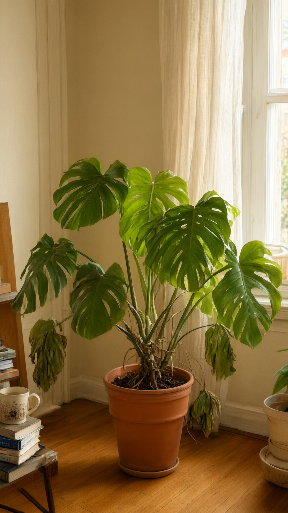
D5 69 qwen
Cleanest frame. Lower leaves wilted, top still perky, so it reads 'unwell', not 'dying'. A little too polished for phone footage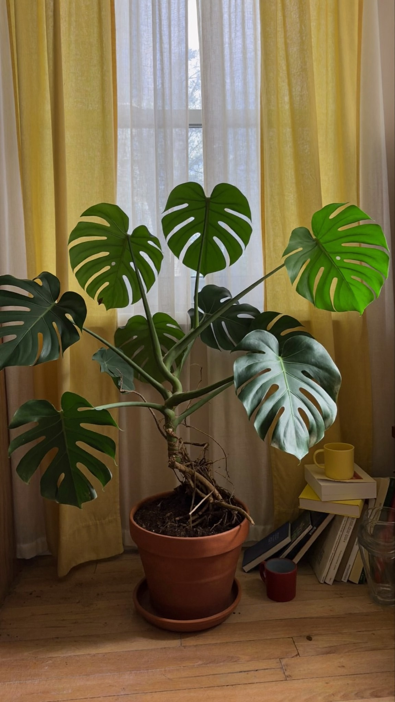
D3 62 soul
A few hanging leaves read slightly tired. Tangled stems at the base may morph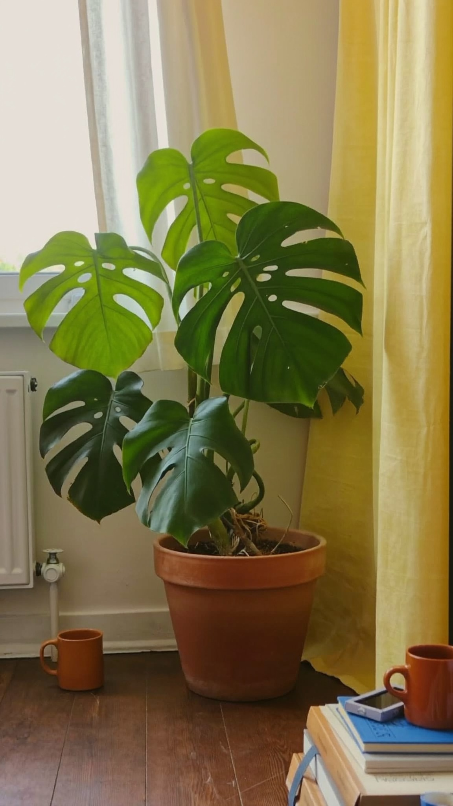
D1 51 soul
Healthy plant, not droopy: misses the beat. Plant sits left, books cut off at the bottom right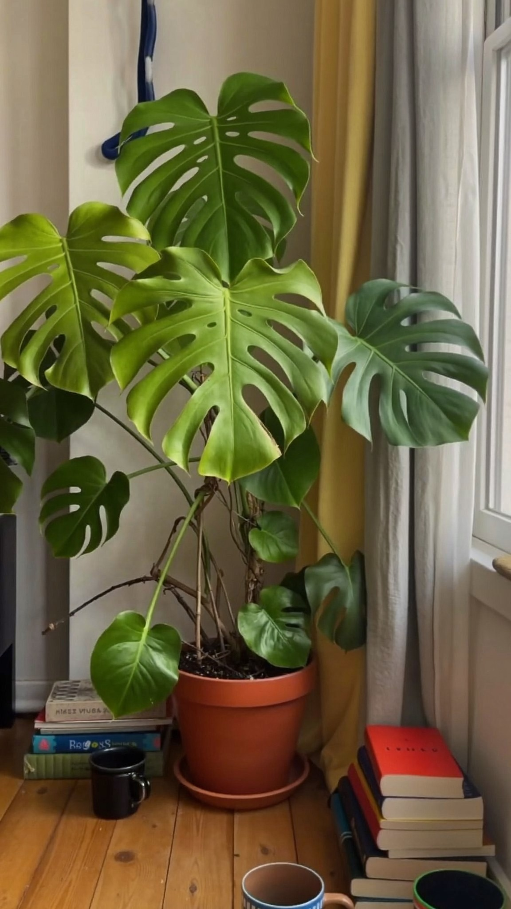
D2 45 soul
Healthy, not droopy. Odd black hook at the top left, garbled book titles, busy lower third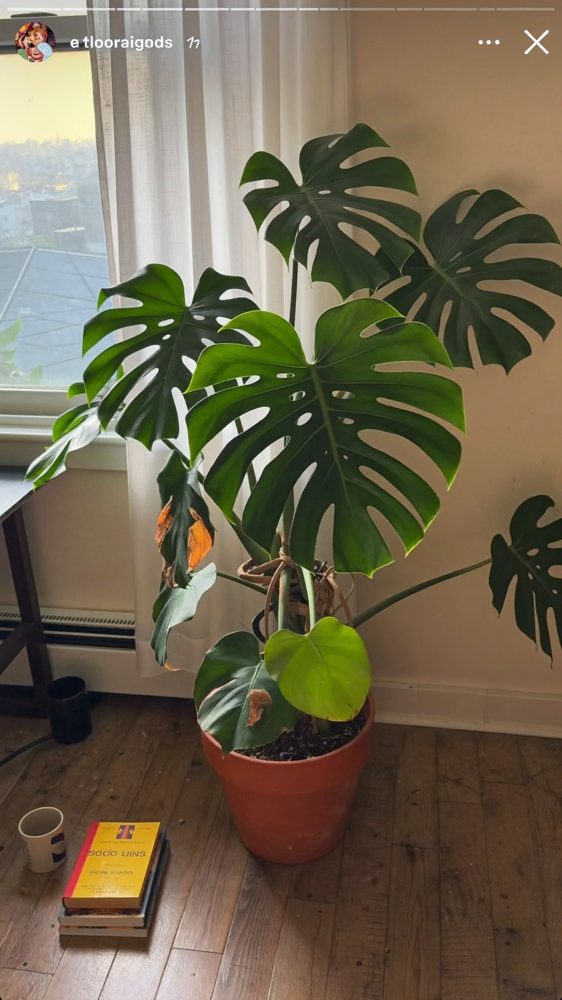
D4 FAIL soul
Instagram Stories interface and a username drawn into the imageL · S05 end: lush monstera
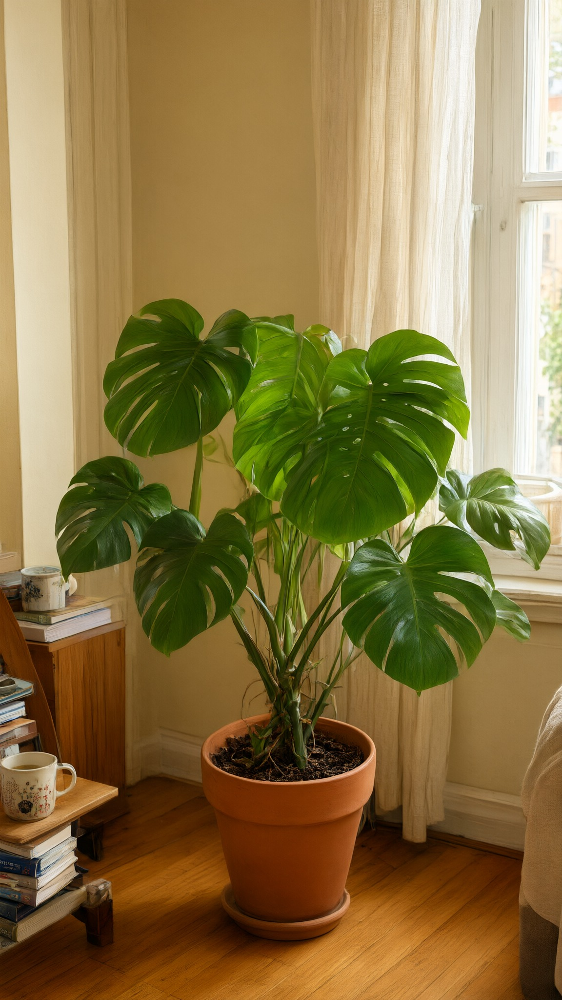
L5 72 qwen
Upright and healthy, centred, calm top. Lusher than D5 but not dramatically so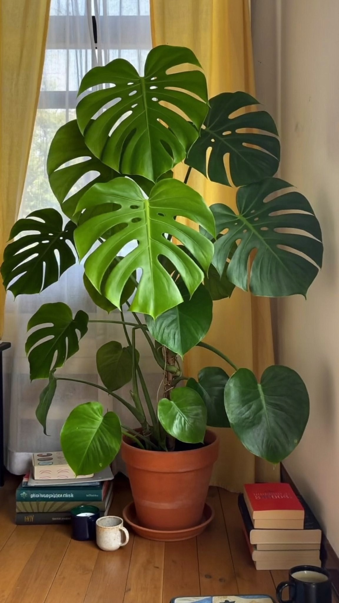
L3 67 soul
Most lush and glossy. Gibberish book titles, books and mugs crowd the lower third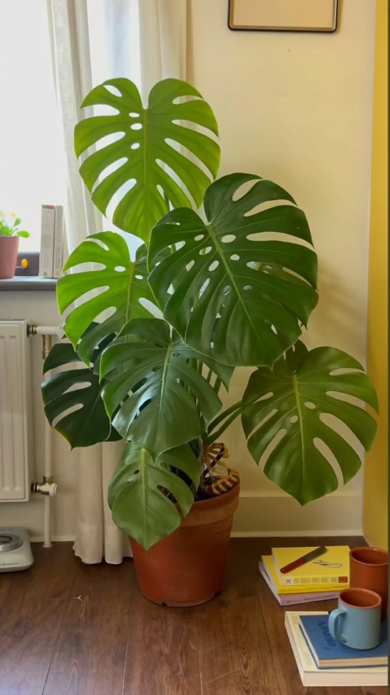
L1 66 soul
Lush, but it fills to the top edge and hides the pot; no room for captions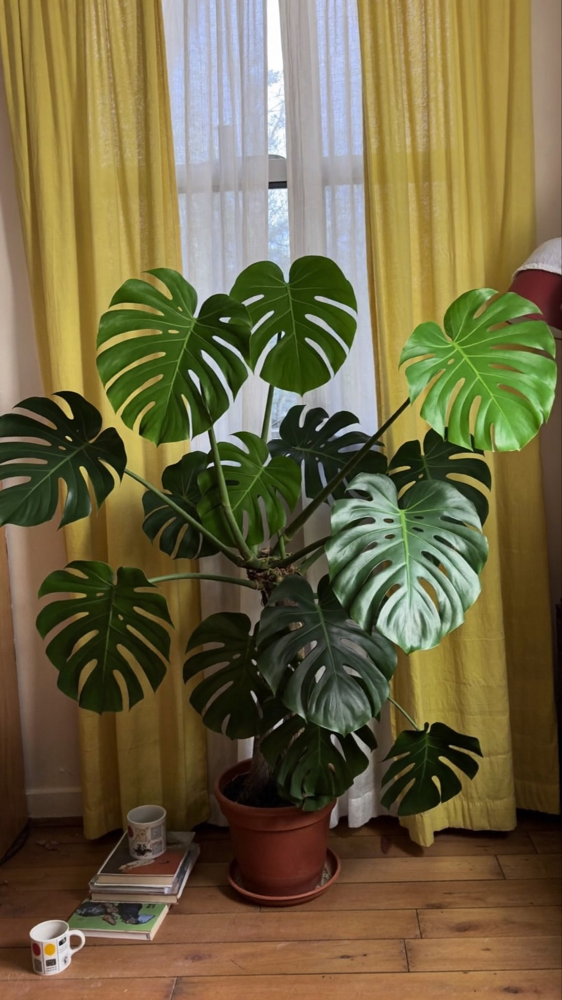
L4 55 soul
Leaves spread in a messy fan; mugs and books crowd the lower third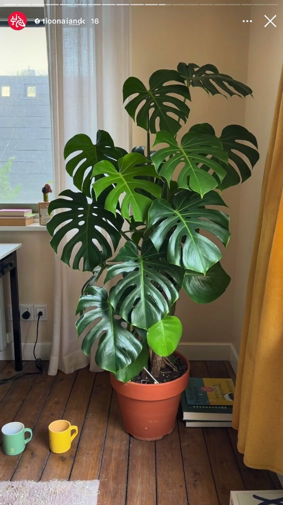
L2 FAIL soul
Instagram Stories interface and a username drawn into the imageP · S01: pour, from the soil
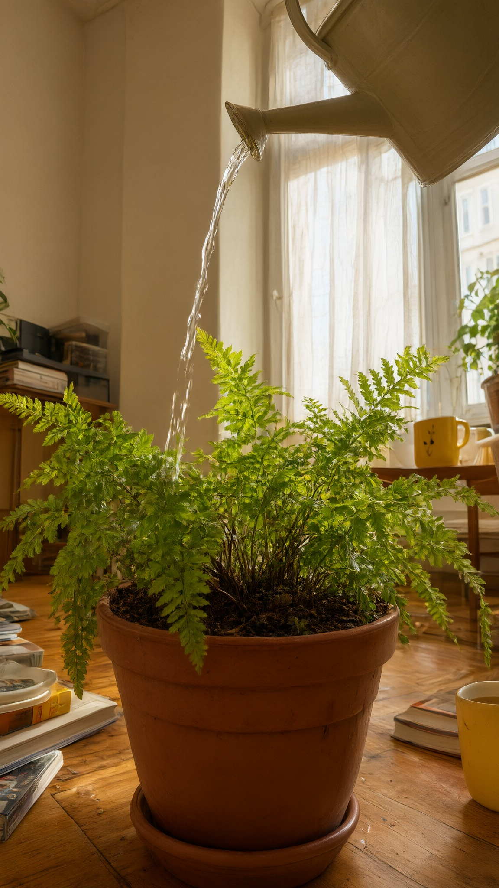
P5 62 qwen
A fern, not the monstera. Best light and matches D5's room; stream too gentle to sell 'drown'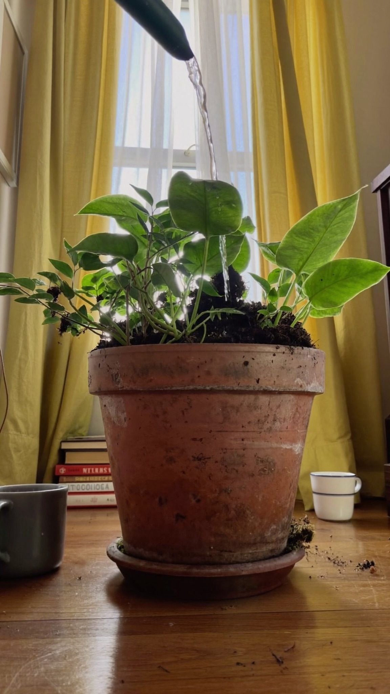
P3 56 soul
Not the monstera. Same yellow-curtain room as D3/L4; floor-level angle, not from the soil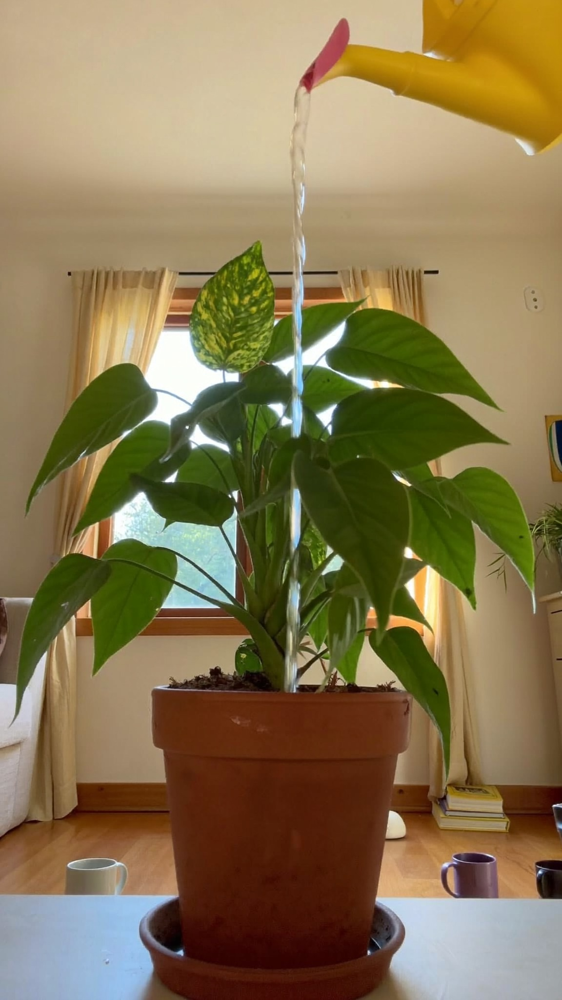
P2 53 soul
A pothos, not the monstera. Clean, but a thin stream: 'watering', not 'drowning'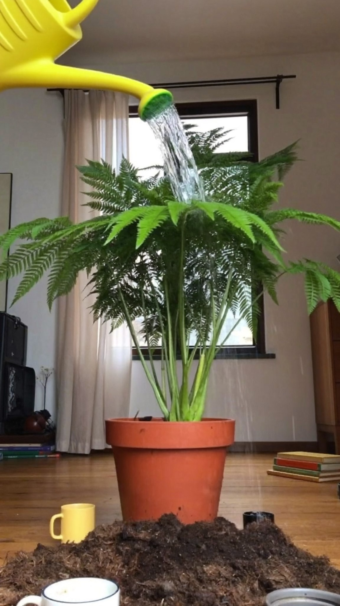
P1 43 soul
A fern, not the monstera. Odd heap of soil in the foreground, cool light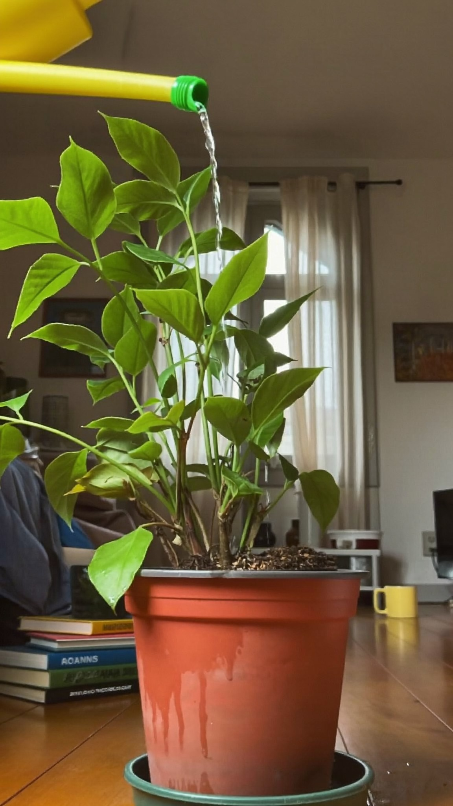
P4 42 soul
Not the monstera. Blue fabric at the left edge may be a person on the sofa; pot looks like plastic